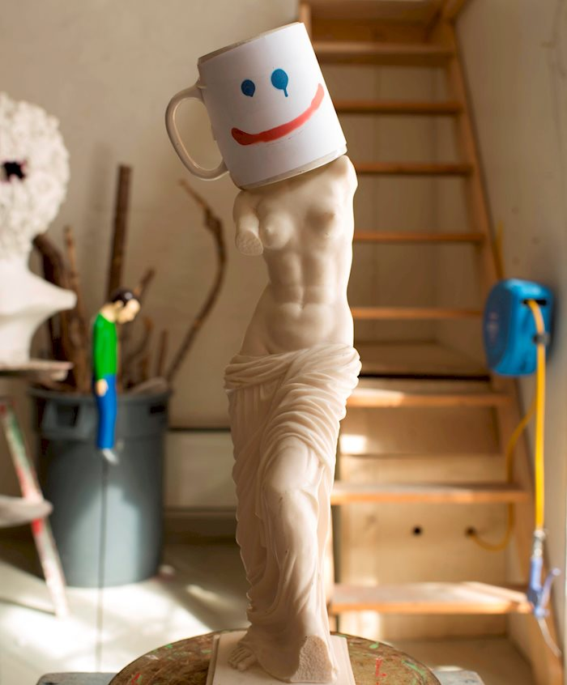
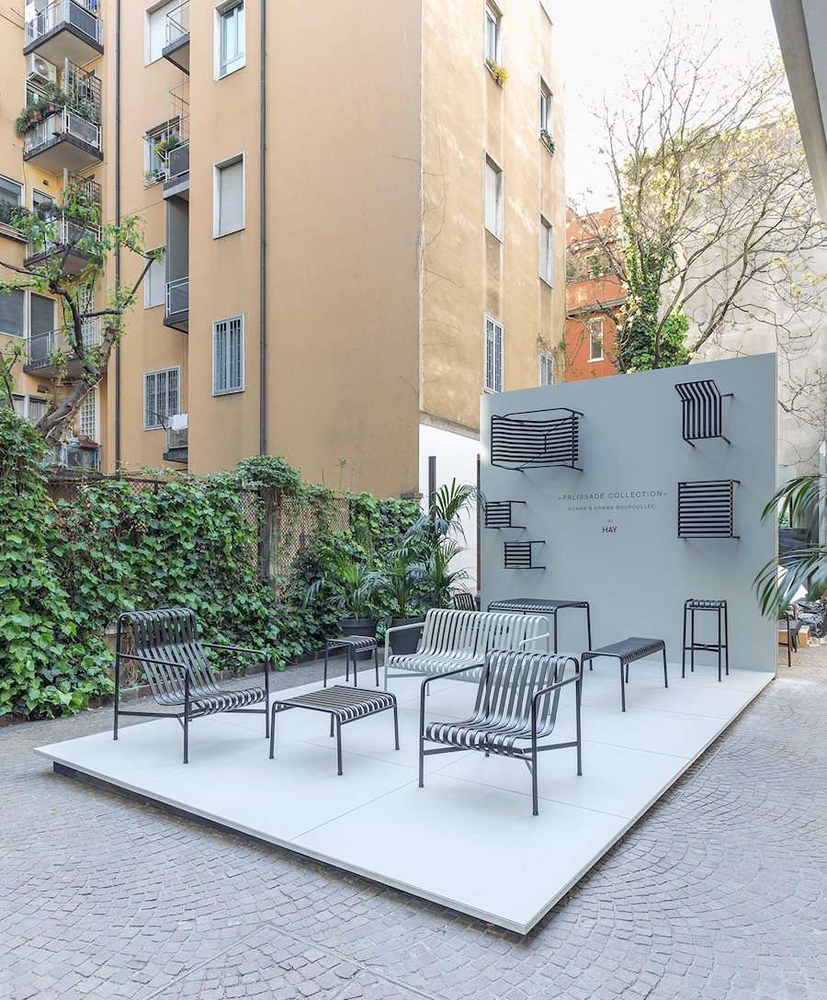
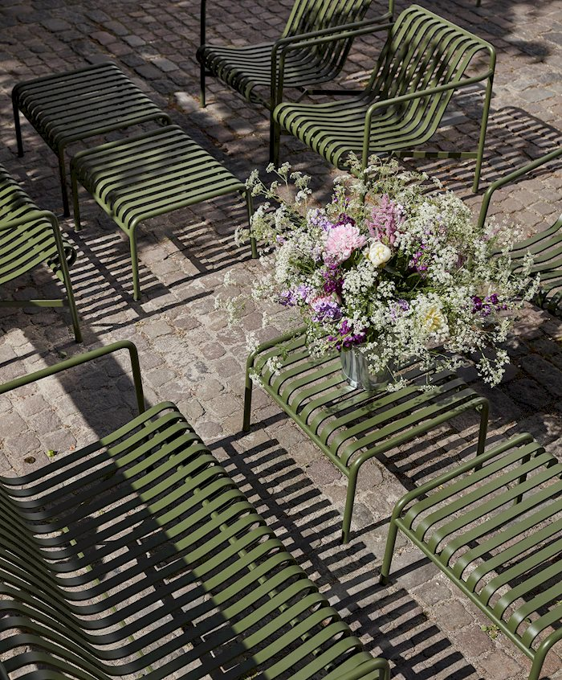
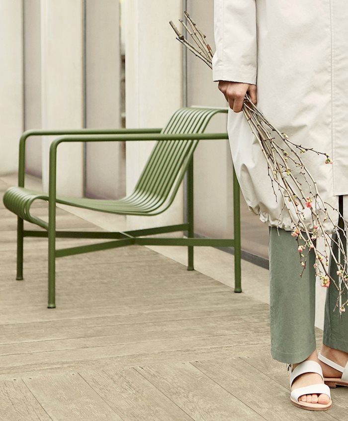
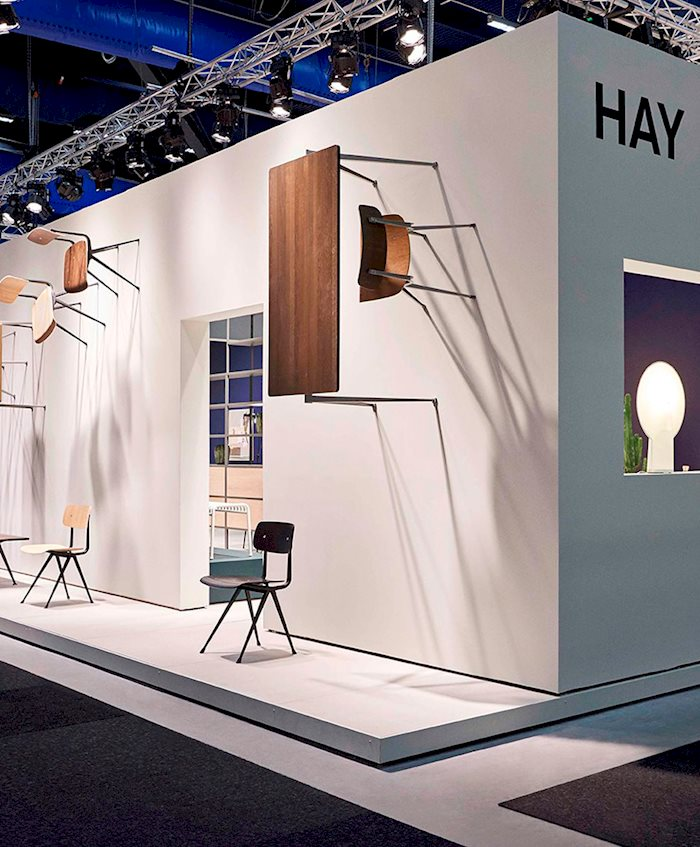
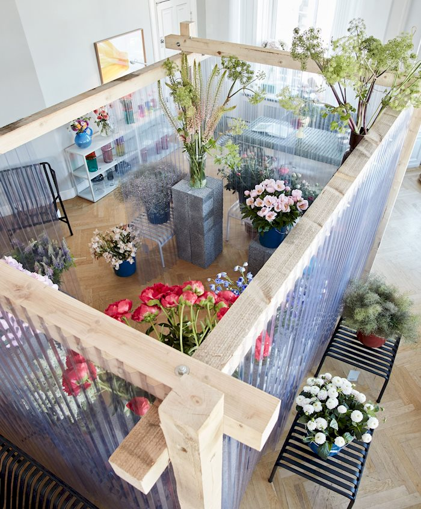
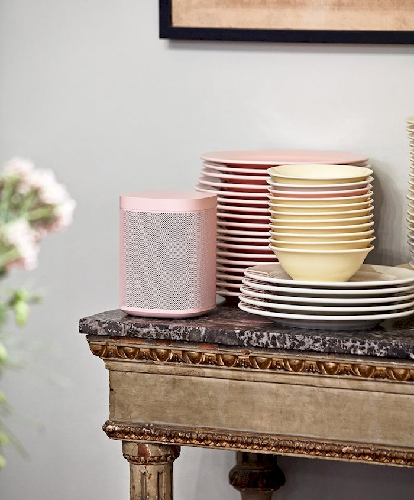
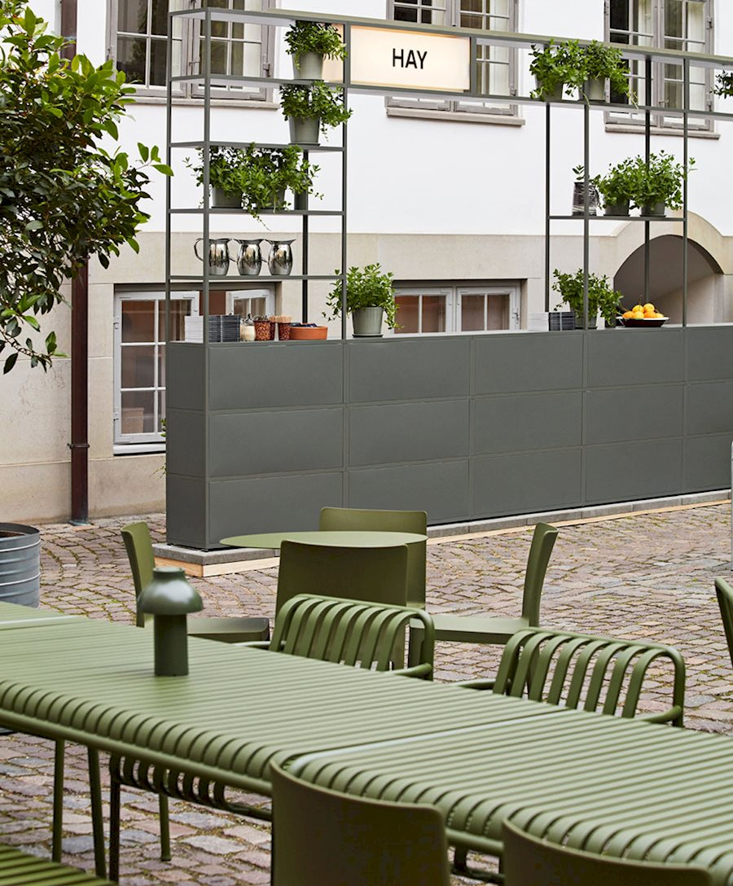

everyday
about
hay : project
2016


2017


2018


2019


×
HAY AT THE 2016 CHART ART FAIR
Chart x hay 콜라보레이션을 위해 독점적으로 제품을 해석하고 약 22명의 아티스트와 함께한 hay 팝업 미니 마켓입니다.
×
PALISSADE AT SALLING ROOFTOP & TIRPITZ MUSEUM
오르후스에 위치한 Salling Rooftop은 오르후스 시내를 360 도로 조망할 수있는 카페 겸 레스토랑입니다.
×
HAY AT THE 2016 MILAN DESIGN WEEK
브레라 중심부의 2000 제곱미터 공간 인 La Pelota 전시회를 기반으로 HAY는 2016 밀라노 디자인 위크를 위해 새로운 디자인과 함께 기존 제품을 선보였습니다.
×
HAY X COS
SPRING 17 WITH PALISSADE / MARCH 2017
패션 브랜드 COS와 가구 회사 HAY는 봄을 맞아 협업 제품에 새로운 홈 아이템을 추가했습니다.
×
HAY AT THE STOCKHOLM FURNITURE FAIR 2017
스톡홀름 가구 박람회 2017에서 헤이는 Friso Kramer와 Wim Rietveld가 디자인 한 Result Chair 및 Pyramid Collection for Ahrend의 재 출시를 특징으로합니다.
×
"INFLORESCENCE" POP-UP SHOP
May 24-26, 10:00-18:00
WallpaperSTORE "Inflorescence"팝업 샵은 WallpaperSTORE의 꽃병과 덴마크 꽃 스타일리스트 Emelie Johansson과 Tableau의 설립자 Julius Værnes Iversen의 꽃입니다.
×
HAY FOR SONOS LIMITED EDITION COLLECTION
HAY FOR SONOS 한정판 컬렉션으로 HAY와 Sonos는 새로운 HAY Sonos One으로 색상, 사운드 및 디자인의 역할을 탐구합니다.
×
3 DAYS OF DESIGN 2019 HIGHLIGHTS
Hay 디자인 전시회 행사로 올 봄과 가을에 제품을 선보일 신제품 출시와 디자이너들과 디자인 토크를 주최했습니다.